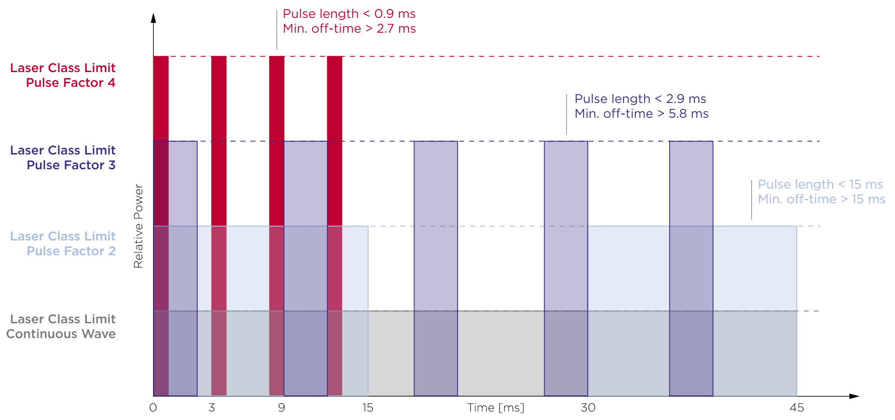
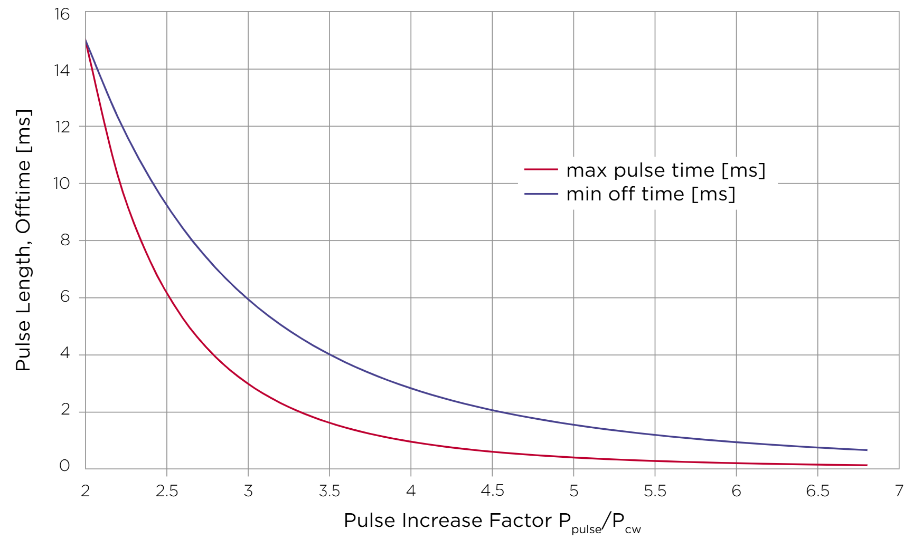
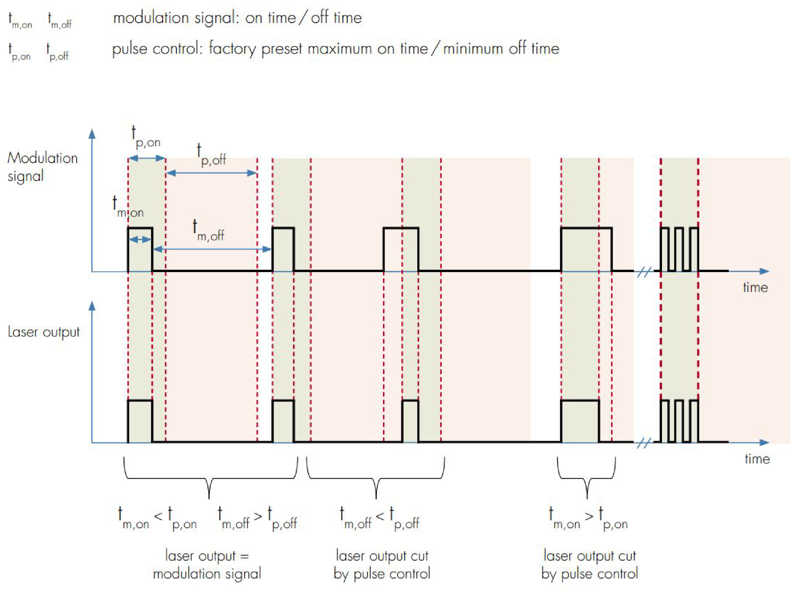
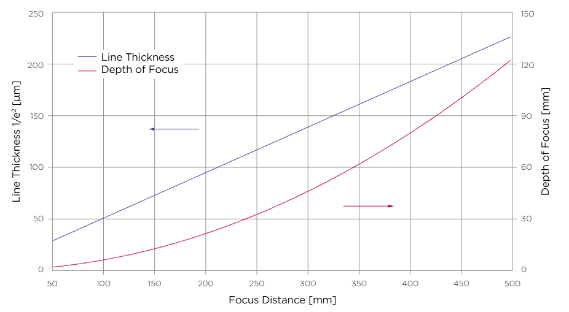
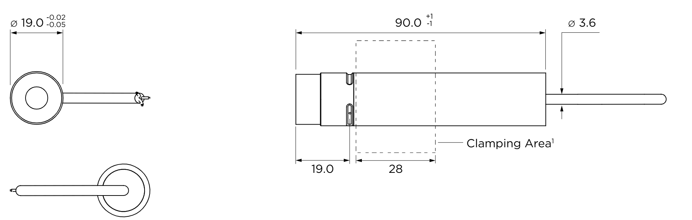
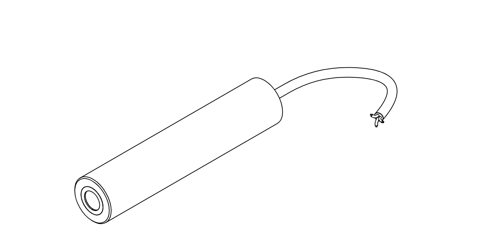
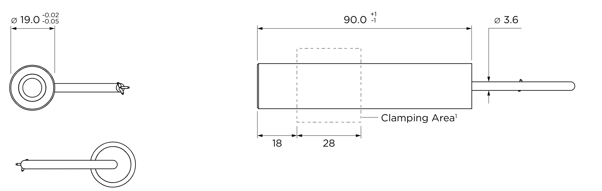
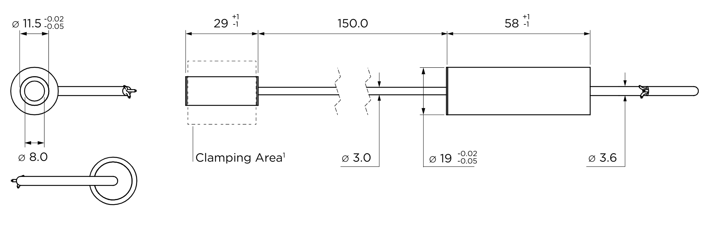

INCREASED PEAK POWER (UP TO 5 TIMES) WITHIN THE SAME LASER CLASS.
High light intensity and therefore high laser power is a key factor in various machine vision applications. However, when using laser light, obeying laser class regulations is sometimes a limiting factor.
Laser manufacturers classify their lasers in continuous-wave operation, which, in combination with a camera, is not the most commonly used operating mode. The pulse control can align the laser signals with the camera, so that up to 5-times higher peak power (compared to cw mode) can be achieved while staying in the same laser class.
The MVpulse (2025) is available in 5 wavelengths (450 – 785 nm) at peak powers up to 100 mW. Various fan angles (5–90°) are available to achieve the required line length, and six different optical options provide a suitable combination of line width and depth of field for your application. The modules come with fixed or adjustable focus in different housings: Standard or 2H (two separate housings - one for the optics with the laser diode and the other for the electronics).
FEATURES
Safe laser classes so that no safety equipment is required (can be set to laser class 2 or 3R)
High pulse power, low average optical power
High output power for high-contrast images and higher accuracy
Pulse control by integrated microcontroller
APPLICATIONS
3D Triangulation
3D Laser Scanners
Industrial Inspection
Structured Lighting
Date12.02.2026Rev0
www.blauoptoelektronik.de
page 1 of 14
Datasheet
FP-MVpulse-25
Product overview
MVpulse laser module combines two key criteria: high optical output power of up to 100 mW while maintaining Laser Class 2 compliance.
The BLAU MVpulse laser module combines two essential requirements for industrial machine vision: high-intensity illumination with output powers of up to 100 mW while maintaining Laser Class 2 eye safety.
High optical output power for high-contrast images
High optical output power is crucial in industrial image processing to create high-contrast images that enable precise and reliable inspection results. However, illumination is only required at the exact moment the camera captures an image.
Available wavelengths
The module is available in the following wavelengths: 450 nm, 520 nm, 640 nm, 660 nm, 785 nm.
Precise synchronization
The module's integrated electronics precisely synchronize the camera acquisition frequency with the laser illumination pulses. This coordination enables the use of high output power without the need for complex or expensive safety measures. Depending on the selected laser class, the BLAU MVpulse provides output powers from 10 mW to 100 mW with pulse durations between 15 ms and 0.38 ms.
10 - 100 mW
Output power
5x
peak power increase compared to cw mode in same laser class
640nm, 660nm, 785nm: 4,5 - 30 V | 450nm, 520nm: 10 - 30 V
Current consumption
< 200 mA @ 5 V (supply current)
Operating temperature
450nm, 520nm, 640nm: 0°C to +50°C 660nm, 785nm: 0°C to +60°C (housing temperature)
Storage temperature
-20°C to +60°C
Modulation
digital high/low active, 0 - 20 kHz, pulse length and duty cycle limited low = 0 V, high = 5 V, input impedance of 10 kOhm at 5 V
Power stability
≤ 5 % at 25°C (after warm up)
Peak power increase compared to cw mode in same laser class
5x @ pulse length < 0,38 ms, off time between pulses > 1,52 ms, 4x @ pulse length < 0,9 ms, off time between pulses > 2,7 ms, 3x @ pulse length < 2,9 ms, off time between pulses > 5,8 ms 2x @ pulse length < 15 ms, off time between pulses > 15 ms higher frequencies on request
Temperature coefficient of wavelength
< 0,25 nm/K
Output power
[mW] · peak power
Visualisation of “Output power”
Date12.02.2026Rev0
www.blauoptoelektronik.de
page 3 of 14
Datasheet
FP-MVpulse-25
02
Beam properties
Beam profile
laser line with uniform power distribution
Focus distance
F: focusable by pin tool (see instruction manual for details) FYYY: factory pre-focused to YYY mm, but still focusable FIXYYY: fixed focus to YYY mm
Boresight deviation
≤ 10 mrad (≤ 3 mrad as option)
Pointing stability
≤ 10 μrad/K (improved pointing stability as option)
Fan angle
5°, 10°, 15°, 20°, 30°, 45°, 60°, 75°, 90°
Line thickness
STD, DL, DLE, DLSE, TS1, TS2
Line intensity variation
± 20 % (± 10 % as option) related to average power (within 80 % of the line)
Line straightness
± 0,1 % (± 0,05 % as option)
Fan angle
5°, 10°, 15°, 20°, 30°, 45°, 60°, 75°, 90°
Line intensity variation
Schematic · not to scale
Line thickness
STDDLDLEDLSETS1TS2
Line straightness
± 0,1 % (± 0,05 % as option)
Date12.02.2026Rev0
www.blauoptoelektronik.de
page 4 of 14
Datasheet
FP-MVpulse-25
03
Specifications
FLEXPOINT® MVpulse SERIES (2025)
Wavelength [nm]
450
520
640
660
785
Model
Line laser with uniform power distribution (FOV correction available)
Wavelength tolerance (typ.) [nm]
±10
±10
±5
±5
±10
Output power (max. peak power) [mW]1
10 – 80
10 – 80
10 – 100
10 – 100
10 – 100
Power stability at 25 °C (after warm up) [%]
≤ 5
Operating voltage [VDC]
10 – 30
4.5 – 30
Current consumption [mA]
< 200 @ 5 VDC
Operating temperature (housing temp.) [°C]2
0 to +50
0 to +50
0 to +50
0 to +60
0 to +60
Peak power increase compared to cw mode in same laser class
5x @ pulse length < 0.38 ms, laser off time between pulses > 1.52 ms 4x @ pulse length < 0.9ms, laser off time between pulses > 2.7 ms 3x @ pulse length < 2.9 ms, laser off time between pulses > 5.8 ms 2x @ pulse length < 15 ms, laser off time > 15 ms
Fan angle [°]3
5, 10, 15, 20, 30, 45, 60, 75, 90
Focusing range [mm]
50 – 5000
Line intensity variation (typ) [%]4
±20 related to average power (within 80 % of the line)
Line straightness [%]4
±0.1 ( ±0.05 as option)
Pointing stability [μrad/K]
≤ 10 (improved pointing stability as option)
Boresight deviation [mrad]
≤ 10 (≤ 3 as option)
Storage temperature [°C]
-20 to +60
Modulation
Digital modulation 0 – 20 kHz, (0 – 1 MHz on request), digital High or Low active, Low = 0 V, High = 5 V, input impedance of 10 kOhm at 5 V
Housing
Aluminium (blue anodized, potential free) ST (Standard) or 2H (separate housing for optics and electronics)
Connector
Open leads (length 500 mm): Brown: +VDC, Black: MOD (digital modulation), Blue: GND M12-connector on request
Laser class
Laser preset at factory to 2 or 3R (IEC 60825-1:2014, EN60825-1:2014+A11:2021)
Accessories available (optional, order separately)
Mount; Power supply for 5 V (≥ 640 nm); Power supply for 12 V with M12 connector
Foot Note 1 The output power is defined as the laser power emitted from the laser module 2 Condensate formation must be avoided (due to optical and electronic components) 3 Fan angle: Defined by the ends of the laser line using FWHM based on the average power (within 80 % of line) 4 Line intensity variation and line straightness are measured at 80 % of the fan angle
Date12.02.2026Rev0
www.blauoptoelektronik.de
page 5 of 14
Datasheet
FP-MVpulse-25
04
Pulse and Monitor / Control Features
The pulse peak power can be increased by the factor 2/3/4/5 compared to the maximum continuous wave average power whilst the laser still stays within the limits of laser class 2 or laser class 3R. By increasing the pulse peak power, the maximum pulse length has to be limited.
Below is a visualization how the pulse peak power can be increased to the limits of laser class 2 and how the pulse length and the minimum off-time will change accordingly.

Pulse increase factor compared to cw
5x
4x
3x
2x
Max. Pulse Length [ms]
0.38
0.9
2.9
15
Min. Laser off time [ms]
> 1.52
> 2.7
> 5.8
> 15
Date12.02.2026Rev0
www.blauoptoelektronik.de
page 6 of 14
Datasheet
FP-MVpulse-25
04
Pulse and Monitor / Control Features
The following graph shows the relation between the pulse increase factor, the max. pulse length and the minimum off-time valid for both laser class 2 and laser class 3R.

The MVpulse (2025) driver electronics automatically monitors and controls the pulse modulation function. If the user applies a higher duty cycle or longer pulse length to the modulation input of the laser which would lead to an exceedance of the laser class, the driver electronics will ignore the signal and will limit the laser output power to stay in the specified laser class. Refer to the examples below.
tm,on | tm,offModulation signal: on time | off timetp,on | tp,offPulse control: factory preset maximum on time | minimum off time
Date12.02.2026Rev0
www.blauoptoelektronik.de
page 7 of 14
Datasheet
FP-MVpulse-25
04
Pulse control
FP-MVpulse-25
Laser class limits and pulse factors
Modulation signal and laser output

Date12.02.2026Rev0
www.blauoptoelektronik.de
page 8 of 14
Datasheet
FP-MVpulse-25
05
Focus Options
Line Thickness and Depth of Focus (DOF) for Standard (STD) Focus Option at 660 nm

Standard laser line characteristics (short range)
Standard laser line characteristics (long range)
MVpulse (2025) lasers are available with different focus options to achieve the right combination of line thickness and depth of focus for the application.
To calculate line thickness and DOF, note the value in the graphs above and multiply them by the factors for your requested wavelength, output power, and focus option listed in the following table.
Pout and λ
Focus options (conversion factor related to standard laser marked in red)
λ
P_out
Δλ
DLSE
DLE
DL
STD
TS1
TS2
[nm]
[mW]
[nm]
LT
DOF
LT
DOF
LT
DOF
LT
DOF
LT
DOF
LT
DOF
450
10 – 80
±10
0.25
0.10
0.33
0.16
0.45
0.30
0.69
0.69
1.49
3.25
2.20
7.06
520
10 – 80
±10
0.29
0.11
0.39
0.19
0.53
0.36
0.78
0.78
1.71
3.69
2.55
8.23
640
10 – 20
±5
0.39
0.16
0.51
0.27
0.69
0.48
1.02
1.07
1.65
2.79
2.43
6.08
640
21 – 30
±5
0.39
0.16
0.51
0.27
0.69
0.48
1.02
1.07
1.47
2.23
2.18
4.87
640
31 – 100
±5
0.47
0.23
0.59
0.36
0.80
0.67
1.20
1.47
1.65
2.79
2.43
6.08
660
10 – 30
±5
0.39
0.15
0.49
0.24
0.67
0.44
1.00
1.00
1.51
2.27
2.25
5.07
660
31 – 100
±5
0.51
0.26
0.65
0.42
0.88
0.78
1.31
1.72
1.51
2.27
2.25
5.07
785
10
±10
0.35
0.10
0.45
0.17
0.61
0.31
0.90
0.68
1.65
2.28
2.43
4.96
785
11 – 100
±10
0.65
0.35
0.82
0.57
1.12
1.05
1.65
2.28
2.00
3.36
2.98
7.45
Foot Note / Abbreviations
LT = Line Thickness · DOF = Depth of Focus · STD = Standard, good compromise for Line Thickness and Depth of Focus · DL = Thin Line · FD = Focus Distance · DLE = Thin line enhanced · DLSE = Thin line super enhanced · TS1 = Enhanced depth of focus · TS2 = Enhanced depth of focus, higher factor
Date12.02.2026Rev0
www.blauoptoelektronik.de
page 9 of 14
Datasheet
FP-MVpulse-25
06
Mechanical properties
Housing material
Aluminum (blue anodized, potential free)
Housing size
ST-F/ST-FIX: Ø19x90 mm 2H-F: Ø11,5x36 mm (optics) + Ø19x58 mm (electronics), connected by 150 mm wire 2H-FIX: Ø11,5x29 mm (optics) + Ø19x58 mm (electronics), connected by 150 mm wire
Pin definition
open leads: +VDC (brown), MOD (black), GND (blue) (M12 connector on request)
Laser class
2 (IEC 60825-1:2014, EN 60825-1:2014+A11:2021)
Housing size
to scale · mm
Visualisation of “Housing size” · wire shortened
Pin definition
schematic · not to scale
Date12.02.2026Rev0
www.blauoptoelektronik.de
page 10 of 14
Datasheet
FP-MVpulse-25
07
Technical drawing
MVpulse 25 ST-F
MVpulse (2025) with adjustable focus and standard housing (ST-F)
Units: mm

MVpulse 25 ST-F-M12
MVpulse-25 with adjustable focus, standard housing (ST-F) and M12-connector (on request)
Units: mm
1For optimal heat dissipation in a mount, we recommend to apply thermal paste on the surface overlap. Units: mm
Date12.02.2026Rev0
www.blauoptoelektronik.de
page 11 of 14
Datasheet
FP-MVpulse-25
07
Technical drawing
MVpulse 25 ST-FIX
MVpulse (2025) with fixed focus and standard housing (ST-FIX)
Units: mm


MVpulse 25 2H-F
MVpulse (2025) with adjustable focus and 2 housings (separate housing for optics and electronics) (2H-F)
Units: mm
1For optimal heat dissipation in a mount, we recommend to apply thermal paste on the surface overlap. Units: mm
Date12.02.2026Rev0
www.blauoptoelektronik.de
page 12 of 14
Datasheet
FP-MVpulse-25
07
Technical drawing
MVpulse 25 2H-FIX
MVpulse (2025) with fixed focus and 2 housings (separate housing for optics and electronics) (2H-FIX)
Units: mm

1For optimal heat dissipation in a mount, we recommend to apply thermal paste on the surface overlap. Units: mm
08
Safety and handling information
Personal Hazard
Depending on the mode of operation, these devices emit highly concentrated non visible infrared light which can be hazardous to the human eye. Products which incorporate these devices have to follow the safety precautions given in IEC 60825-1 »Safety of laser products«.
Handling Precautions
Products are subject to the risks normally associated with sensitive electronic devices including static discharge, transients, and overload.
RoHScompliant
Date12.02.2026Rev0
www.blauoptoelektronik.de
page 13 of 14
Datasheet
FP-MVpulse-25
09
Ordering code
FP-MVpulse-25
Housing
X
ST
2H
Wavelength [nm]
X
450
520
640
660
785
Output Power [mW]
X
10 – 80
10 – 100
Modulation / Power Adjustment
X
M | Digital Modulation, active low
MI | Digital Modulation inverted, active high
Fan Angle [°]
X
5
10
15
20
30
45
60
75
90
Focus [mm]
X
F | Focus adjustable
FYYY | Focus factory-preset to YYY mm, but still adjustable